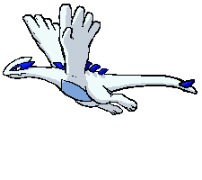
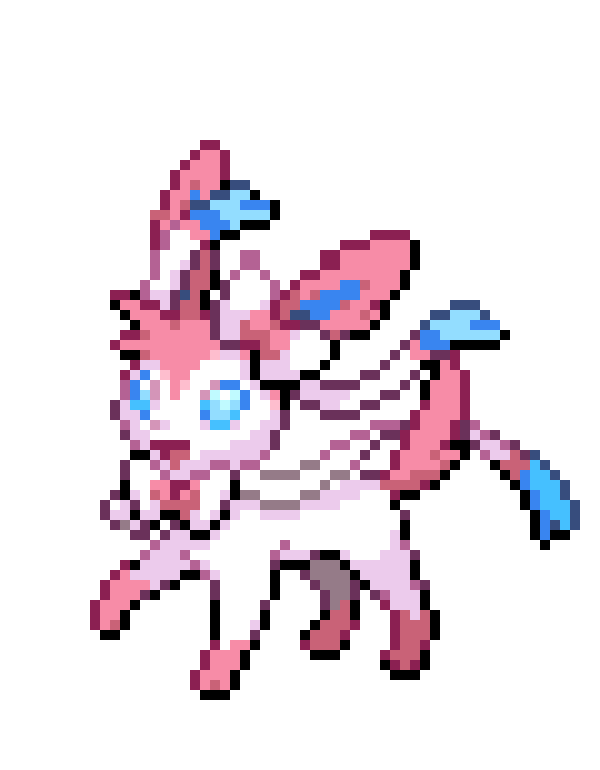

My Favorite Pokemon
Hello! This page is all about my favorite Pokemon and why they are my favorites!

Lugia, My First Favorite Pokemon
Lugia was my very first favorite pokemon. Lugia is also known as "The Beast of the Sea", as stated in Lugia's debut movie, Pokemon the Movie 2000. Click to learn more information on Lugia and why it is one of my favorites!

Sylveon, the Pokemon Who Restored My Love for the Games
When Sylveon was first introduced, I wasn't to thrilled about a new type, the fairy type, being added to the games. To give the type a chance, I had decided to give the new Eeveelution, Sylveon, a try. Sylveon is one of the main reasons I ended up falling back in love with the Pokemon video game franchise!